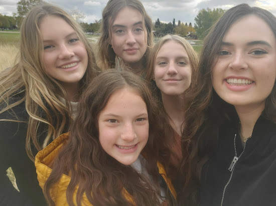

Hi! My name is Teralyn and I am an aspiring Marketing student at Brigham Young University. I was first introduced to marketing in high school where I took classes in digital media. These digital media classes allowed me to gain experience in designing and developing advertisements. Over time, I became more interested in the business side of product placement and advertisement. As I developed my interest in marketing strategy I made sure to take opportunities in work and school to learn more about the industry and have more experience. Since then, I have worked to develop advertisment campaigns to market flu shots, and applied to internships where I will be able to learn with those already in the industry.
When I am not spending time in school I am working on music and nature. I have always loved creating music and have invested my time into learning how to play both violin and piano. I also like spending time in nature on hikes or playing sports. I believe that there is something special in spending time in nature and with music. Family and religion are important to me and I consider it my duty to work hard, find joy and show love to those around me. I believe that I have the qualities needed to be a valuable asset to any company and team. I have a love for learning and a desire to become better that will allow me to succeed in any environment.
Because music is one of my passions, I included my favorite music video here. This video inspires me to include passion in my workpace and home life. I love Itzhak Perlman's dedication to his work and hope you will enjoy it, too!
Here are some pictures of my family and my dog.
Visit My Instagram or Visit My Facebook to learn more about who I am! If you would like to contact me, email me at teralynwhipple@gmail.com or call at (801) 979 4870.